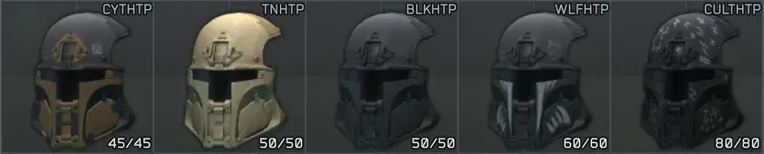
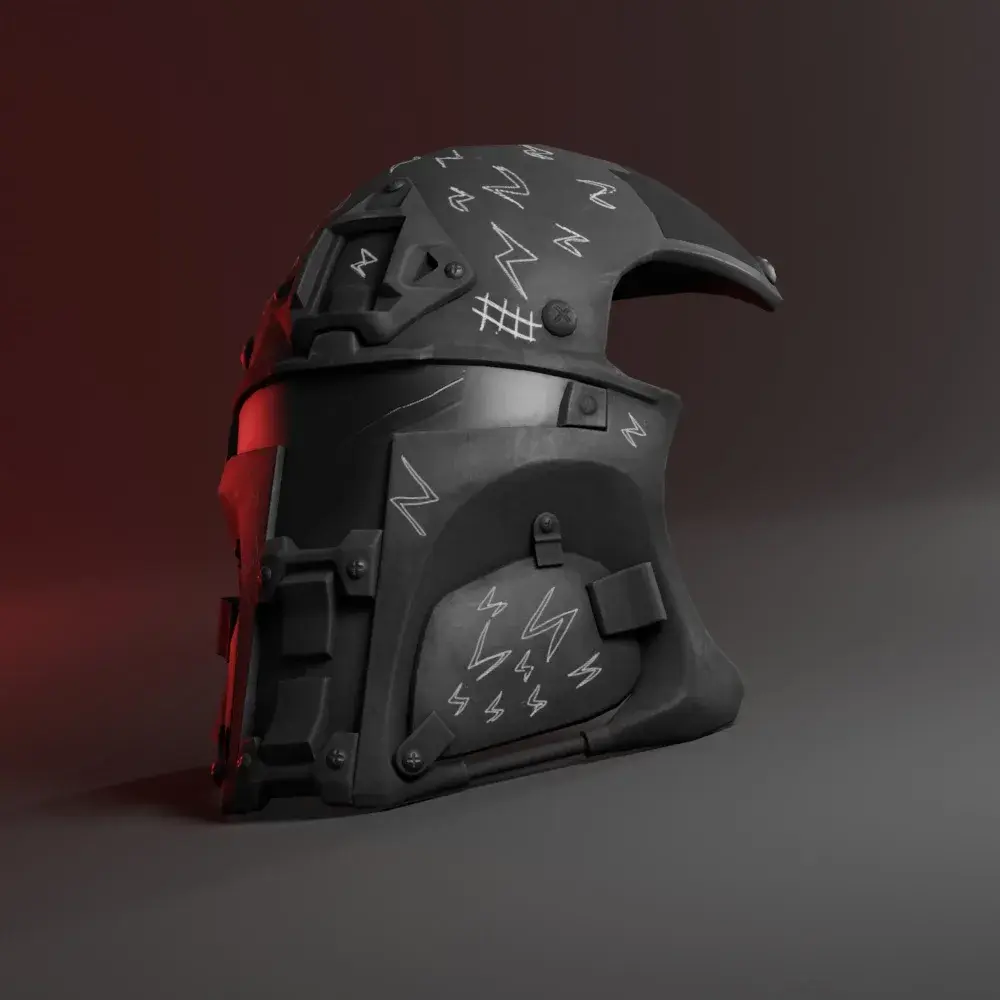
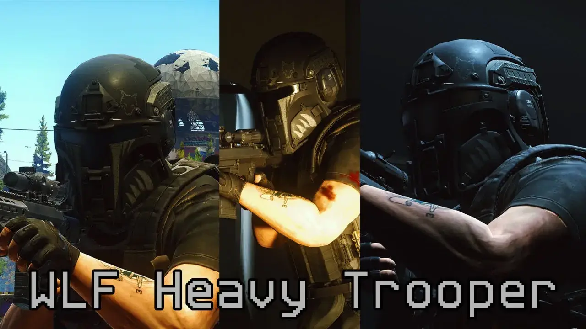
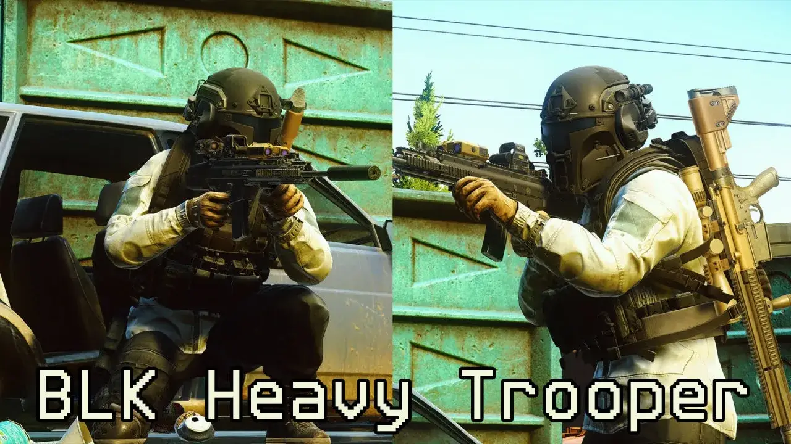
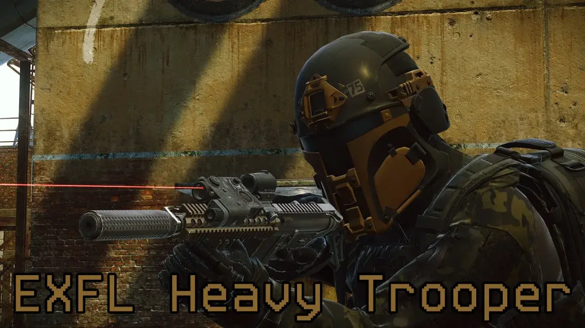

Wolfik's Heavy Trooper Masks - Reupload
- Downloads
- 41,746
- Favourites
- 44
- Mod lists
- 91
Available Heavy Trooper Masks

README
This is a reupload of an older mod that I really liked, so I rewrote an updated version of the mod that now works on SPT 4.0.x. that includes a few new additions that weren’t originally in the mod. I DID NOT create the trooper masks, as they was created by SerWolfik.
Original mod: SerWolfik’s Heavy Trooper
Mod Overview
Adds 5 new Heavy trooper masks: Coyote, Tan, Black, Wolf, and Cultist. These masks are like the original Tac-Kek trooper mask, but with higher armor tiers and much higher prices. These masks can be bought from Peacekeeper and the flea-market and are highly configurable (Check out the config file for more information!). Masks can also be found in-raid in weapon boxes, caches, duffle bags, and dead scavs. The ultra rare and valuable Cultist mask can be found worn by Cultists if you are lucky.
Trooper Mask Information
Coyote Mask - Class 3 armor with max durability 45. Available at level 3 Peacekeeper for $1200 dollars.
Black And Tan Masks - Class 4 armor with max durability 50. Available at level 4 Peacekeeper for $2000 dollars.
Wolf Mask (flea-market banned) - Class 5 armor, with max durability 60. Available at level 4 Peacekeeper after completing quest “Wet Job - Part 5” for $3000 dollars
Cultist Mask (flea-market banned) - Class 5 armor, with max durability 80. Available at level 4 Peacekeeper after completing quest “The Guide” for $3500 dollars
In-raid Mask Spawns
All Masks can also be found in-raid in loot containers: weapon boxes, caches, duffle bags, and dead scavs.
Cultist Trooper Masks can be found from Cultists if you are lucky,
How To Install
Open the downloaded zip file then drag and drop the ‘SPT’ folder into your SPT directory
Compatibility Issues:
These masks are not compatible with mods that add new nvgs or helmets as I have to manually make these mods compatible which I will try to do when such mods update to 4.0.x and above.




Version
1.1.0
I’ve tested as much as I can, but there can always be bugs. Let me know if you find any or if something doesn’t seem right.
- Updated to SPT version 4.0.x
- Updated prices, armor durability, and spawn rates of all masks.
- Added small chance cultists can spawn with Cultist heavy trooper mask.
- Added Quest unlock to purchase the Black Wolf trooper mask after completing “Wet Job - Part 5”. (configurable)
- Added Quest unlock to purchase the Cultist trooper mask after completing “The Guide”. (configurable)
- Flea-market banned Wolf and Cultist masks by default as they are meant to be rare and not easily obtainable (configurable)
- Added ability to wear light face coverings with heavy trooper masks ie: shemaghs, balaclavas, and more…
- Added many more options to the config file, most properties for each mask can be altered now through the config.
- Removed all compatibility patches for previously compatible mods as most of them haven’t been updated to SPT version 4.0 at the moment.
Version
1.0.7
- Updated for SPT 3.10
- Reduced Tan Heavy Trooper Mask armor rating from 4 to 3 and reduced price
- Fixed armour point issue with Coyote Heavy Trooper
Version
1.0.4
SPT 3.9.x
- Reduced chance of finding heavy trooper masks as they were spawning way more than intended in loot pools.
- Added Config file which contains all the loot pool probabilities for each heavy trooper mask, all values can be changed and disabled for each loot container if desired.
Version
1.0.3
SPT 3.9.x
- Added chance to find all heavy trooper masks in weapon boxes, wooden crates, duffle bags, and ground caches on all maps.
- Cult and Wolf masks are much more rarer than the Black, Coyote, and Tan as they are higher armour class.
Version
1.0.2+b
SPT 3.8.x
- Includes all the above changes
Version
1.0.2+a
SPT 3.9.x
If the Tan Heavy Trooper Mask is still not Tan skinned, you must clear your temp files in the SPT Launcher settings. This will fix it.
FIX
- TAN Heavy Trooper Mask is now tan skinned, was previously using the wrong skin.
- Fixed trader assort loyalty levels